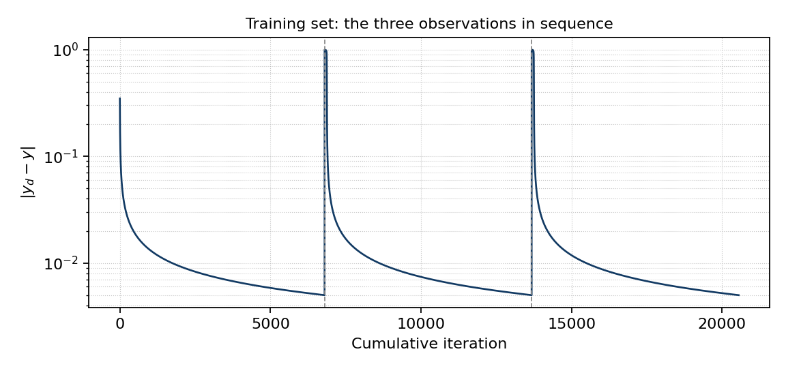
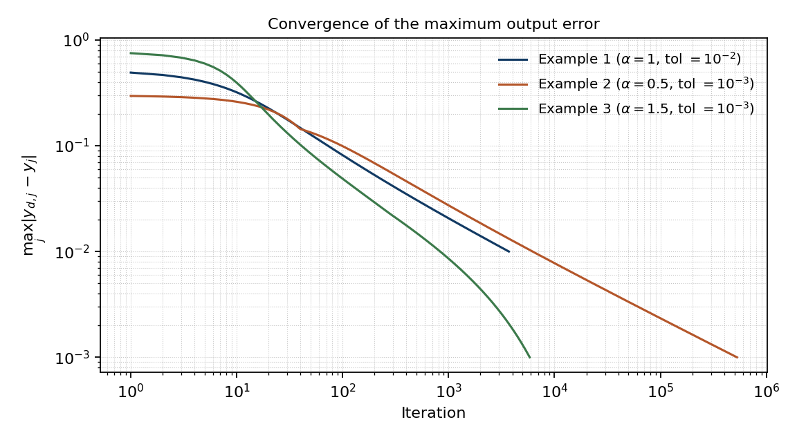

Ouvrir la boîte noireOpening the black box
Un appel à une toolbox peut entraîner un modèle sans montrer comment chaque poids est modifié. Ce TP d’intelligence artificielle reconstruit le chemin complet de l’apprentissage.A toolbox call can train a model without showing how each weight changes. This AI lab reconstructs the complete learning path.
Le projet a été réalisé en binôme à l’ENP. Le perceptron multicouche possède une couche cachée et utilise une activation sigmoïde. Le programme choisit un jeu de données, effectue la propagation avant, calcule l’erreur de sortie et rétropropage le gradient jusqu’aux poids.This ENP project was completed by two students. The multilayer perceptron has one hidden layer and sigmoid activation. The program selects a data set, performs forward propagation, computes output error and backpropagates gradients to the weights.
Le critère d’arrêt porte sur l’erreur de sortie ; l’exécution présente la sortie finale, les poids appris et le nombre d’itérations. Les petits jeux de données servent à comprendre le comportement de l’algorithme plutôt qu’à annoncer une performance industrielle.Stopping is based on output error; a run shows final output, learned weights and iteration count. Small teaching data sets help explain the algorithm rather than support industrial-performance claims.
- EntréeInputs
Jeux d’apprentissage simples et classification binaire.Small training sets and binary classification.
- CalculCalculation
Sigmoïde, erreur, gradient, mise à jour des poids.Sigmoid, error, gradient and weight updates.
- LectureReadout
Sortie finale, poids et nombre d’itérations.Final output, weights and iteration count.
Deux chemins vers le même gradientTwo paths to the same gradient
La première version privilégie des boucles pédagogiques. La seconde emploie le calcul matriciel vectorisé et met aussi à jour les biais.The first version favours explicit teaching loops. The second uses vectorised matrix operations and also updates biases.
Cette duplication volontaire aide à suivre les dimensions des vecteurs, les dérivées de la sigmoïde et la circulation de l’erreur d’une couche à l’autre. Elle montre également comment la même logique peut s’exprimer de manière plus compacte en MATLAB.This deliberate duplication helps track vector dimensions, sigmoid derivatives and error flow from layer to layer. It also shows how the same logic can be written more compactly in MATLAB.
Un mode d’apprentissage en ligne conserve les poids entre exemples successifs. Les fichiers sont séparés entre sélection des données, boucle d’apprentissage, propagation et rétropropagation, afin que chaque étape puisse être étudiée isolément.An online-learning mode carries weights between successive examples. Files separate data selection, training loop, forward propagation and backpropagation so each stage can be inspected independently.
- Version 1Version 1
Boucles explicites pour suivre chaque opération.Explicit loops for following each operation.
- Version 2Version 2
Produits matriciels vectorisés et mise à jour des biais.Vectorised matrix products and bias updates.
- OrganisationStructure
Fonctions distinctes pour données, propagation et apprentissage.Separate functions for data, propagation and learning.

Observer l’apprentissageWatch learning happen
Le rapport présente la base d’essai, les équations et l’évolution de l’erreur. Le code a été corrigé puis testé sous MATLAB R2024b avant publication open source.The report presents the teaching data, equations and error evolution. The code was corrected and tested in MATLAB R2024b before its open-source publication.
La courbe de convergence illustre l’amélioration de l’erreur pendant l’entraînement. Elle documente ce jeu de données et ce paramétrage ; elle ne doit pas être lue comme une mesure de généralisation sur des données inconnues.The convergence curve illustrates training-error reduction. It documents this data set and configuration; it is not a generalisation measure on unseen data.
Le dépôt public conserve les fonctions MATLAB et la licence MIT. Le rapport du TP reste la meilleure entrée pour relier équations, choix d’implémentation et figures.The public repository contains MATLAB functions under the MIT licence. The lab report is the best entry point for connecting equations, implementation choices and figures.

Ce que démontre le TPWhat the lab demonstrates
La rétropropagation n’est pas ici un mot-clé : chaque transformation et mise à jour est visible dans le code.Backpropagation is not merely a keyword here: every transform and update is visible in the code.
C’est une preuve de compréhension des fondements d’un MLP, dans un cadre académique. Le projet ne revendique ni modèle profond à grande échelle ni déploiement en production.It demonstrates understanding of MLP fundamentals in an academic setting. The project makes no claim of large-scale deep learning or production deployment.